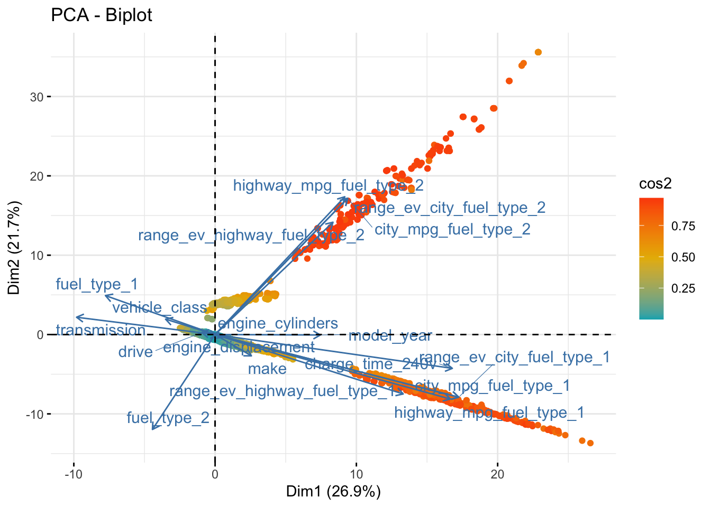

here() starts at /Users/lodrik/Documents/GitHub/ML_Project
Attaching package: 'dplyr'
The following objects are masked from 'package:stats':
filter, lag
The following objects are masked from 'package:base':
intersect, setdiff, setequal, union
── Attaching core tidyverse packages ──────────────────────── tidyverse 2.0.0 ──
✔ forcats 1.0.0 ✔ stringr 1.5.1
✔ lubridate 1.9.3 ✔ tibble 3.2.1
✔ purrr 1.0.2 ✔ tidyr 1.3.1
✔ readr 2.1.5
── Conflicts ────────────────────────────────────────── tidyverse_conflicts() ──
✖ dplyr::filter() masks stats::filter()
✖ dplyr::lag() masks stats::lag()
ℹ Use the conflicted package (<http://conflicted.r-lib.org/>) to force all conflicts to become errors
Attaching package: 'plotly'
The following object is masked from 'package:ggplot2':
last_plot
The following object is masked from 'package:stats':
filter
The following object is masked from 'package:graphics':
layout
Linking to GEOS 3.11.0, GDAL 3.5.3, PROJ 9.1.0; sf_use_s2() is TRUE
Attaching package: 'scales'
The following object is masked from 'package:purrr':
discard
The following object is masked from 'package:readr':
col_factor
Loading required package: NLP
Attaching package: 'NLP'
The following object is masked from 'package:ggplot2':
annotate
Attaching package: 'kableExtra'
The following object is masked from 'package:dplyr':
group_rows
Attaching package: 'summarytools'
The following object is masked from 'package:tibble':
view
Welcome! Want to learn more? See two factoextra-related books at https://goo.gl/ve3WBa
Attaching package: 'neuralnet'
The following object is masked from 'package:dplyr':
compute
library(data.table)
Attaching package: 'data.table'
The following objects are masked from 'package:lubridate':
hour, isoweek, mday, minute, month, quarter, second, wday, week,
yday, year
The following object is masked from 'package:purrr':
transpose
The following objects are masked from 'package:dplyr':
between, first, last
In order to see the link between the features, we can use a dimension reduction technique such as the Principal Component Analysis, aiming to link the features according to their similarities accross instances and combine features in fewer dimensions.
PCA
# Assuming your data frame is named data_cleaneddata_prepared <- data_cleaned %>%mutate(across(where(is.character), as.factor)) %>%mutate(across(where(is.factor), as.numeric)) %>%scale() # Standardizes numeric data including converted factorspca_results <-PCA(data_prepared, graph =FALSE)summary(pca_results)
fviz_pca_biplot(pca_results,geom.ind ="point", # To show data pointsgeom.var =c("arrow", "text"), # To show variable vectors and labelscol.ind ="cos2", # Color by the quality of representationgradient.cols =c("#00AFBB", "#E7B800", "#FC4E07"), # Colorsrepel =TRUE# Avoid text overlapping)

The biplot shows several information. - The colored dots represent the numerical observations of the dataset. - The cos2 gradient shows the representation of the feature by the dimension, so the higher the cos2 (tending to red), the better the representation of the observation in the dimension. - The arrows represent the features in the form of the circle of correlation. Here, we have 2 dimensions which represent almost 49% of the observations. - Looking at the arrows, it shows that most of variables are stongly linked to dimension 2. We can also see that the arrows that go in opposite directions (such as fuel_type_1 and highway_mpg_fuel_type_1) are negatively correlated. From another view, fuel_type_1 and fuel_type_2 are uncorrelated.
Screeplot
# Generating the scree plot from PCA resultsfviz_eig(pca_results, addlabels =TRUE, # Adds labels to the plot indicating the percentage of varianceylim =c(0, 100), # Optional: Sets the limits of the y-axis to make the plot easier to interpretbarfill ="lightblue", # Color of the barsbarcolor ="black", # Color of the borders of barsmain ="Scree Plot of PCA") # Title of the plot
Taking the screeplot into account, 6 dimensions are needed to reach at least 75%, meaning the features might be relatively independent. It is alredy shown in the biplot above, as most arrows in the middle seem to be shorter and the cos2 are low, meaning that the features might be more linked to other dimensions than the first 2 dimensions. To check further the correlation, we can use a heatmap.
Heatmap
library(reshape2)
Attaching package: 'reshape2'
The following objects are masked from 'package:data.table':
dcast, melt
The following object is masked from 'package:tidyr':
smiths
# Assuming data_prepared has been previously defined and standardizedcor_matrix <-cor(data_prepared) # Calculate correlation matrix# Melt the correlation matrix for ggplot2melted_cor_matrix <-melt(cor_matrix)# Heatmap with all correlation coefficients displayedggplot(melted_cor_matrix, aes(Var1, Var2, fill = value)) +geom_tile(color ="white") +# Add white lines to distinguish the tilesgeom_text(aes(label =sprintf("%.2f", value)), color ="black", size =3.5) +# Always display labelsscale_fill_gradient2(low ="lightblue", high ="darkblue", mid ="blue", midpoint =0, limit =c(-1,1),name ="Spearman\nCorrelation") +# Use gradient2 for a diverging color schemetheme_minimal() +theme(axis.text.x =element_text(angle =45, hjust =1),axis.text.y =element_text(angle =45, hjust =1),plot.title =element_text(hjust =0.5), # Center the titleplot.title.position ="plot") +labs(x ='Variables', y ='Variables', title ='Correlations Heatmap of Variables') # Adjust the title and labels as needed
This heatmap indicates the correlation between the variables. It shows that the correlations aren’t that strong between variables, expect for a few such as mighway_mpg_fuel and city_mpg_fuel.